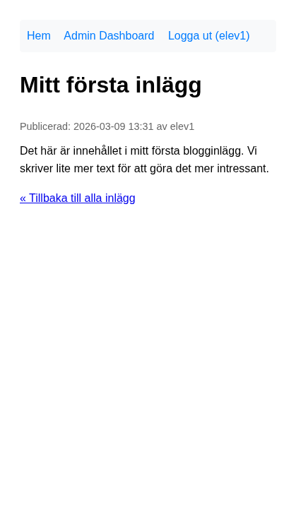

Del 5: Refaktorering
I denna del förbättrar vi koden genom att flytta återkommande logik till funktioner och introducera type hinting. Förutsättning: Du har genomfört Del 4: Uppdatera och radera.
Koden fungerar, men databasfrågor och HTML är blandade i samma filer. Vi refaktorerar steg för steg – en funktion i taget.
Steg 12a: Skapa functions.php med en funktion
Börja med att flytta en databasfråga till en funktion. Vi väljer den som hämtar ett enskilt inlägg – den används i post.php.
Steg 1: Skapa filen
Skapa includes/functions.php:
<?php
// includes/functions.php
require_once __DIR__ . '/database.php';
/**
* Hämtar ett specifikt inlägg från databasen.
*
* @param int $post_id ID för inlägget.
* @return array|false Post-datan eller false om den inte hittas.
*/
function get_post_by_id(int $post_id): array|false {
$pdo = connect_db();
$stmt = $pdo->prepare("SELECT posts.*, users.username
FROM posts
JOIN users ON posts.user_id = users.id
WHERE posts.id = :id");
$stmt->bindParam(':id', $post_id, PDO::PARAM_INT);
$stmt->execute();
return $stmt->fetch();
}
?>
Nytt i detta steg: int $post_id och : array|false är type hints – de anger vilka typer funktionen förväntar sig och returnerar. PHP kontrollerar detta vid anrop.
Steg 2: Använd funktionen i post.php
I post.php, ersätt try-blocket som hämtar inlägget med:
} else {
try {
$post = get_post_by_id($post_id);
if (!$post) {
$fetch_error = "Inlägget hittades inte.";
}
} catch (PDOException $e) {
error_log("View Post Error (ID: $post_id): " . $e->getMessage());
$fetch_error = "Kunde inte hämta blogginlägget just nu.";
}
}
Lägg till require_once 'includes/functions.php'; (efter config och före eller istället för database – functions inkluderar database). Du kan ta bort den direkta require_once 'includes/database.php'; om du vill, eftersom functions.php inkluderar den.
Testa att öppna ett inlägg. Det ska fungera som tidigare, men koden i post.php är nu enklare.

Du har nu lärt dig: Att extrahera databaslogik till funktioner och att använda type hints (int, array|false).
Steg 12b: Lägg till fler funktioner
När den första funktionen fungerar lägger vi till två till: en för alla inlägg (index.php) och en för användarens inlägg (admin).
Lägg till i functions.php
/**
* Hämtar alla inlägg, senaste först.
*
* @return array Lista med inlägg (inkl. username från JOIN).
*/
function get_all_posts(): array {
$pdo = connect_db();
$stmt = $pdo->query("SELECT posts.*, users.username
FROM posts
JOIN users ON posts.user_id = users.id
ORDER BY posts.created_at DESC");
return $stmt->fetchAll();
}
/**
* Hämtar alla inlägg för en specifik användare.
*
* @param int $user_id Användarens ID.
* @return array Lista med användarens inlägg.
*/
function get_posts_by_user(int $user_id): array {
$pdo = connect_db();
$stmt = $pdo->prepare("SELECT id, title, created_at, updated_at
FROM posts
WHERE user_id = :user_id
ORDER BY created_at DESC");
$stmt->bindParam(':user_id', $user_id, PDO::PARAM_INT);
$stmt->execute();
return $stmt->fetchAll();
}
Uppdatera index.php
Ersätt try-blocket med:
try {
$posts = get_all_posts();
} catch (PDOException $e) {
error_log("Index Page Error: " . $e->getMessage());
$fetch_error = "Kunde inte hämta blogginlägg just nu.";
}
Glöm inte require_once 'includes/functions.php';.
Uppdatera admin/index.php
Ersätt try-blocket med:
try {
$posts = get_posts_by_user($logged_in_user_id);
} catch (PDOException $e) {
error_log("Admin Index Error: " . $e->getMessage());
$fetch_error = "Kunde inte hämta dina blogginlägg just nu.";
}
Försök själv: Skulle du kunna skapa en funktion get_user_by_username(string $username) för login.php? Vad skulle den returnera?
Steg 12c: Type hinting – en snabb genomgång
Type hints gör koden tydligare och fångar fel tidigare.
| Syntax | Betydelse |
|---|---|
int $post_id | Parametern måste vara ett heltal |
string $username | Parametern måste vara en sträng |
: array | Funktionen returnerar en array |
| `: array | false` |
: void | Returnerar inget (använd för t.ex. echo-funktioner) |
Om du anropar get_post_by_id("abc") ger PHP ett TypeError. Det är bra – det avslöjar fel som annars kanske inte märks förrän senare.
Steg 12d: Nästa steg – templates (översikt)
En större förbättring är att separera HTML från PHP med template-filer. Istället för att blanda PHP och HTML i samma fil kan du ha:
.
├── includes/
│ ├── config.php
│ ├── database.php
│ └── functions.php
├── templates/ # HTML-mallar
│ ├── partials/
│ │ ├── header.php # <html>, <head>, <nav>
│ │ └── footer.php # </body></html>
│ ├── index.view.php # Innehållet för startsidan
│ ├── post.view.php
│ └── ...
├── index.php # Hämtar data, inkluderar template
├── post.php
└── ...
I index.php skulle du då ha:
<?php
require_once 'includes/config.php';
require_once 'includes/functions.php';
$posts = get_all_posts();
$fetch_error = null;
// ... felhantering ...
require 'templates/partials/header.php';
require 'templates/index.view.php';
require 'templates/partials/footer.php';
index.view.php innehåller bara HTML med <?php ?> för att skriva ut variabler som $posts. Detta är ett större steg – prova gärna på egen hand när du känner dig redo.
Ytterligare förbättringar att utforska
När du vill gå vidare kan du överväga:
- CSRF-tokens: Dolda tokens i formulär för create/update/delete för att skydda mot Cross-Site Request Forgery.
- Twig eller liknande: Ett templating-språk som separerar HTML och logik ännu tydligare.
- Klasser (OOP): T.ex. en
Post-klass med metoder somsave(),delete(). - Routing: En enda
index.phpsom hanterar alla URL:er via ett routing-system. - Strikare filvalidering: Kontrollera filinnehåll, inte bara
$_FILES['type'], vid bilduppladdning.
Du har nu byggt en fungerande CRUD-applikation och börjat refaktorera den. Bra jobbat!
Föregående: Del 4: Uppdatera och radera